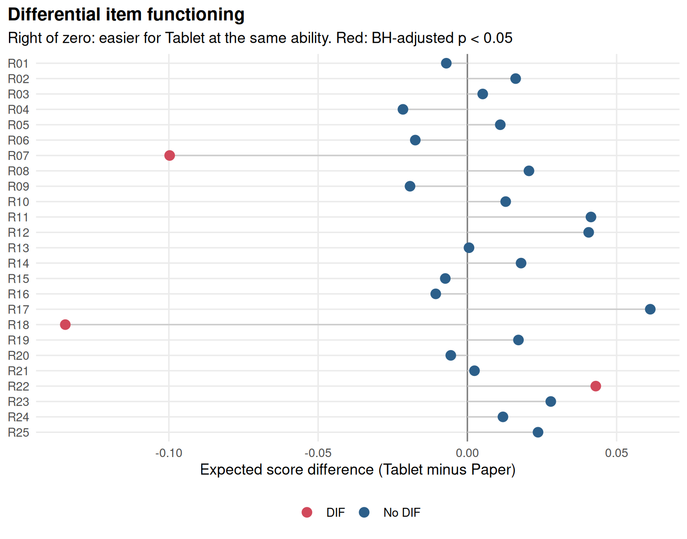
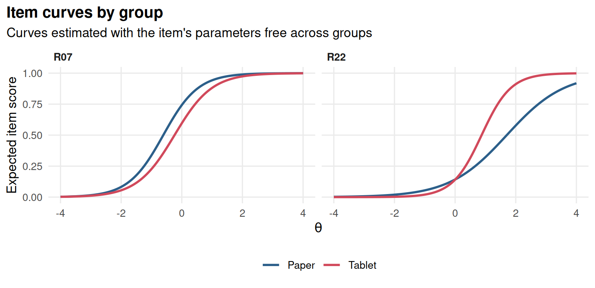

Chapter 9 Differential item functioning and fairness
Learning goals. After this chapter you can
- tell impact (a real difference between groups) from DIF (an item that works differently for people of the same ability);
- run an IRT likelihood-ratio DIF analysis and read its effect sizes;
- distinguish uniform from non-uniform DIF;
- run a Mantel-Haenszel DIF test and classify items with the ETS A/B/C rules;
- explain why anchor items matter.
Key terms: DIF, reference and focal groups, uniform and non-uniform DIF, DIF effect size, anchor items.
9.1 The ideas
Groups often differ in their average scores. That alone says nothing about whether a test is fair: the groups may simply differ in what the test measures, which is called impact. An item shows differential item functioning (DIF) when people from different groups with the same ability have different chances of answering it correctly (Holland and Wainer 1993). DIF is a statistical finding, not a verdict of bias; a content review decides whether the reason is irrelevant to what the test should measure (bias) or a real difference in what was taught.
We compare a reference group (often the majority group) with a focal group. In IRT terms, DIF means the item has different parameters in the two groups.
- Uniform DIF: the item is harder for one group at every ability level (the difficulty differs, the curves are parallel).
- Non-uniform DIF: the size or direction of the difference changes with ability (the slopes differ and the curves cross).
To compare groups we must first put them on a common scale, and that needs
items we trust to work the same way in both: the anchors. mirtverse’s
dif() uses a constrained-baseline approach: it fits a multiple-group
model in which all item parameters are equal across groups while the group
means and variances are free, then frees each item’s parameters in turn and
tests the change with a likelihood-ratio test. Items you do not test serve as
anchors. Because each test involves only one free item, the approach works
well when DIF is confined to a few items; when many items have DIF, a
purification step (testing, removing flagged items from the anchor set, and
testing again) is safer.
A significant test is not enough: with large samples tiny differences are
significant. dif() therefore reports effect sizes on the item score scale.
The signed version (esd) is the average difference in the probability of a
correct answer between the focal and the reference group at the same
ability; the unsigned version (uesd) also captures crossing curves.
The Mantel-Haenszel (MH) procedure (Holland and Thayer 1988) is the classical alternative. It matches people on their sum score, builds a 2 × 2 table (group × right/wrong) at every score level and tests whether the odds of a correct answer differ between groups across the tables. ETS classifies the size of MH DIF as A (negligible), B (moderate) or C (large).
9.2 Example 1: paper versus tablet
A district moved its Grade 5 reading test from paper to tablets. We simulate 25 items answered by 1,200 students on paper (reference) and 800 on tablets (focal). The tablet group is slightly weaker on average (impact). Two items that ask students to drag text into a table are harder on tablets (uniform DIF), and one long-passage item is easier for strong tablet readers and harder for weak ones (non-uniform DIF).
# Simulated 25-item reading test; `group` is the test mode for each student.
set.seed(909)
a <- matrix(rlnorm(25, 0.2, 0.25)); d <- matrix(rnorm(25, 0.2, 0.9))
a_tab <- a; d_tab <- d
d_tab[c(7, 18)] <- d[c(7, 18)] - 0.8 # R07, R18: uniform DIF
a_tab[22] <- a[22] * 1.8; d_tab[22] <- d[22] # R22: non-uniform DIF
paper <- simdata(a, d, N = 1200, itemtype = "2PL")
tablet <- simdata(a_tab, d_tab, N = 800, itemtype = "2PL",
Theta = matrix(rnorm(800, -0.2, 1)))
resp <- rbind(paper, tablet)
colnames(resp) <- sprintf("R%02d", 1:25)
group <- factor(rep(c("Paper", "Tablet"), c(1200, 800)),
levels = c("Paper", "Tablet"))The raw scores differ between the groups, but that alone does not tell us which items, if any, are unfair:
mode_resp <- resp; mode_group <- group # kept for the exercises
tapply(rowSums(resp), group, mean)
#> Paper Tablet
#> 12.6 11.1dif() tests every item. Paper is the reference group because it is the
first level of the factor.
res <- dif(resp, group = group)
res
#> DIF analysis: Paper (reference) vs Tablet; 25 items tested
#> Likelihood-ratio tests freeing a1, d; BH-adjusted p < 0.05 flags DIF
#>
#> item X2 df p.value p.adjusted flag esd uesd converged
#> R01 1.273 2 .529 .758 -0.007 0.018 TRUE
#> R02 2.153 2 .341 .758 0.016 0.022 TRUE
#> R03 0.264 2 .876 .876 0.005 0.009 TRUE
#> R04 1.480 2 .477 .758 -0.022 0.022 TRUE
#> R05 1.158 2 .560 .758 0.011 0.019 TRUE
#> R06 0.953 2 .621 .758 -0.017 0.018 TRUE
#> R07 29.459 2 < .001 < .001 DIF -0.100 0.100 TRUE
#> R08 1.447 2 .485 .758 0.021 0.024 TRUE
#> R09 1.793 2 .408 .758 -0.019 0.021 TRUE
#> R10 5.327 2 .070 .290 0.013 0.044 TRUE
#> R11 4.878 2 .087 .312 0.041 0.041 TRUE
#> R12 7.665 2 .022 .108 0.041 0.047 TRUE
#> R13 0.720 2 .698 .758 0.001 0.014 TRUE
#> R14 1.044 2 .593 .758 0.018 0.018 TRUE
#> R15 0.578 2 .749 .780 -0.007 0.012 TRUE
#> R16 0.783 2 .676 .758 -0.011 0.013 TRUE
#> R17 9.572 2 .008 .052 0.061 0.061 TRUE
#> R18 45.538 2 < .001 < .001 DIF -0.135 0.135 TRUE
#> R19 2.351 2 .309 .758 0.017 0.024 TRUE
#> R20 1.087 2 .581 .758 -0.006 0.018 TRUE
#> R21 1.270 2 .530 .758 0.002 0.019 TRUE
#> R22 32.166 2 < .001 < .001 DIF 0.043 0.075 TRUE
#> R23 4.298 2 .117 .364 0.028 0.032 TRUE
#> R24 0.878 2 .645 .758 0.012 0.015 TRUE
#> R25 1.456 2 .483 .758 0.024 0.024 TRUEThe flagged items are the three we planted. The signed effect sizes of R07 and R18 are negative, meaning the items are harder for tablet users of the same ability. R22’s signed effect is small but its unsigned effect is larger: the curves cross, so the advantages and disadvantages partly cancel out on average.


interpret() writes the findings up:
interpret(res)
#> DIF overview
#> ------------
#> * Items were tested for DIF between Paper and Tablet, with Paper as the
#> reference group (n = 1200 Paper, n = 800 Tablet).
#> * Each item's parameters (a1, d) were freed in turn and compared with a model
#> holding them equal across groups (likelihood-ratio test, BH-adjusted p <
#> 0.05).
#> * On the common scale, the Tablet group's mean ability is 0.28 SD below the
#> Paper group's, and its SD is 1.09.
#>
#> DIF items
#> ---------
#> * 3 of 25 items show DIF: R18 (expected score difference -0.135, favours
#> Paper; p < .001); R07 (expected score difference -0.100, favours Paper; p <
#> .001); R22 (expected score difference 0.043, favours Tablet; p < .001).
#> * Statistical DIF is not proof of bias: ask content experts whether these
#> items measure something other than the intended ability for one group
#> before removing or revising them.The baseline model also estimates the impact: the latent mean of the tablet group relative to the paper group (fixed at 0).
9.2.1 Choosing anchors
If we already know some items are clean, we can test only the others: the untested items become anchors. Here, as a check, we test only the three flagged items against the other 22:
dif(resp, group = group, items = c("R07", "R18", "R22"))$table
#> # A tibble: 3 × 9
#> item X2 df p.value p.adjusted flag esd uesd converged
#> <chr> <dbl> <int> <dbl> <dbl> <lgl> <dbl> <dbl> <lgl>
#> 1 R07 29.5 2 4.01e- 7 4.01e- 7 TRUE -0.0997 0.0997 TRUE
#> 2 R18 45.5 2 1.29e-10 3.88e-10 TRUE -0.135 0.135 TRUE
#> 3 R22 32.2 2 1.04e- 7 1.55e- 7 TRUE 0.0430 0.0755 TRUEDoes the DIF matter for scores? One way to judge is to compare the expected total score of the test in the two groups at the same ability, which is called differential test functioning. With two items that are harder for tablet users and one that crosses, the total effect is a fraction of a score point; a content review would still look at the drag-and-drop items, because the problem can be fixed by changing the interface.
9.3 Example 2: Mantel-Haenszel on a chemistry quiz
The MH test needs no IRT model, which makes it a good first screen and a useful check. We simulate a 20-item chemistry quiz taken by 600 girls and 600 boys of equal average ability; item C11 involves a sports context and is easier for boys of the same ability.
# Simulated 20-item quiz; `group` is gender. C11 has uniform DIF.
set.seed(910)
a <- matrix(rlnorm(20, 0.2, 0.2)); d <- matrix(rnorm(20, 0, 0.8))
d_boys <- d; d_boys[11] <- d[11] + 0.7
resp <- rbind(simdata(a, d, N = 600, itemtype = "2PL"),
simdata(a, d_boys, N = 600, itemtype = "2PL"))
colnames(resp) <- sprintf("C%02d", 1:20)
group <- factor(rep(c("Girl", "Boy"), each = 600), levels = c("Girl", "Boy"))For each item we match on the total score of the other items, build the stratified 2 × 2 tables and run the MH test. The common odds ratio \(\alpha_{MH}\) converts to the ETS delta scale as \(\text{MH D-DIF} = -2.35 \ln \alpha_{MH}\). The ETS rules call DIF negligible (A) when \(|\text{MH D-DIF}| < 1\) or the test is not significant, large (C) when \(|\text{MH D-DIF}| \ge 1.5\) and significant, and moderate (B) otherwise (the full rules also test the size against 1).
mh_item <- function(resp, group, item) {
rest <- rowSums(resp[, colnames(resp) != item])
strata <- cut(rest, unique(quantile(rest, 0:5 / 5)), include.lowest = TRUE)
tab <- table(group, factor(resp[, item], levels = 1:0), strata)
mh <- mantelhaen.test(tab, exact = FALSE)
delta <- -2.35 * log(unname(mh$estimate))
data.frame(item = item, alpha_MH = unname(mh$estimate),
MH_D_DIF = delta, p.value = mh$p.value,
ETS = ifelse(mh$p.value >= 0.05 | abs(delta) < 1, "A",
ifelse(abs(delta) >= 1.5, "C", "B")))
}
mh <- do.call(rbind, lapply(colnames(resp), mh_item, resp = resp, group = group))
mh[order(mh$p.value), ][1:5, ]
#> item alpha_MH MH_D_DIF p.value ETS
#> 11 C11 0.576 1.297 3.55e-05 B
#> 4 C04 1.288 -0.596 4.54e-02 A
#> 13 C13 0.789 0.556 1.22e-01 A
#> 1 C01 1.222 -0.471 1.36e-01 A
#> 9 C09 1.224 -0.476 1.42e-01 AThe table is arranged so that \(\alpha_{MH}\) is the odds of a correct answer in the reference group (girls) divided by the odds in the focal group (boys), at the same score. Values above 1, and negative MH D-DIF, mean the item favours the reference group; values below 1, and positive MH D-DIF, favour the focal group. C11 stands out, with a moderate (B) DIF in favour of boys. Matching on five score bands keeps the tables reasonably full in a sample of this size; with more people you can match on every score.
The IRT analysis agrees:
9.4 Your turn
- In Example 1, refit
dif()withp_adjust = "none". How many items are flagged now? Which result would you report, and why? - Run the MH procedure on the data of Example 1. Does it detect R22? Why is MH weaker for non-uniform DIF?
- In Example 2, what happens to the MH results if you match on the total score including the studied item? On five versus ten score bands?
- A newspaper writes that “the tablet test is biased because tablet users scored lower”. Using the results of Example 1, write three sentences in reply.
Solutions
sum(dif(mode_resp, group = mode_group, p_adjust = "none")$table$flag)
#> [1] 5
mh_mode <- do.call(rbind, lapply(colnames(mode_resp), mh_item,
resp = mode_resp, group = mode_group))
subset(mh_mode, item %in% c("R07", "R18", "R22"))
#> item alpha_MH MH_D_DIF p.value ETS
#> 7 R07 1.980 -1.605 1.16e-09 C
#> 18 R18 2.079 -1.720 1.57e-12 C
#> 22 R22 0.689 0.876 4.67e-03 A- Without adjustment a few more items may be flagged at the 5% level by chance alone, since 25 tests are run. Report the adjusted results, and use the effect sizes to decide which items matter.
- MH compares the average odds across score levels. When the curves cross, the advantage at one end and the disadvantage at the other cancel out, so MH (like the signed effect size) often misses non-uniform DIF. The IRT likelihood-ratio test, which frees the slope, catches it.
- Including the studied item in the matching score is the textbook MH procedure; excluding it, as above, is a common variant. With 20 items the results are similar. More bands make the matching finer, but leave fewer people per table.
- For example: “Tablet users did score a little lower on average, but most of that difference reflects a real difference in reading between the groups, not the test. When we compared students of the same reading ability, only three of 25 questions worked differently, and two of them involve dragging text on a screen, which we are redesigning.”